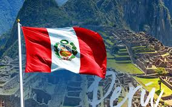
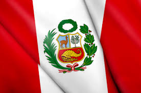

|
Perú (en quechua y en aimara: Piruw), oficialmente República del Perú, es un país soberano ubicado al oeste de América del Sur. El océano Pacífico bordea su costa y limita con Ecuador y Colombia al norte, Brasil al este, y Bolivia y Chile al sureste. Su territorio se compone de diversos paisajes: los valles, las mesetas y las altas cumbres de los Andes se despliegan al oeste hacia la costa desértica y al este hacia la Amazonia. Es uno de los países con mayor diversidad biológica y mayores recursos minerales del mundo. |
 |
Perú es considerado como un mercado emergente, con un alto puntaje en el Índice de desarrollo humano y una economía de renta media alta. Entre sus principales actividades económicas se incluyen la agricultura, la minería, la pesca, la construcción y el comercio. | |
| El Antiguo Perú fue una región de sucesivas civilizaciones desde el surgimiento de Caral-Supe en el 3200 a. C. El Imperio incaico fue el último Estado autóctono o indígena, el cual dominó gran parte del occidente sudamericano hacia el siglo xv. En el siguiente siglo se produjo la Conquista del incario, tras la cual el territorio se configuró como un virreinato del Imperio español. |
 | A pesar de que en las Leyes Nuevas de 1542 se reconocían a los indígenas como súbditos libres de la Corona española, la implantación de las encomiendas generó que la economía del virreinato estuviese articulada en torno a la explotación de plata y oro con el trabajo forzado de ellos y de esclavos africanos en minas y haciendas. | |
 |
|||